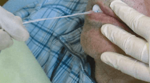

要介護者のリハビリテーション
- 訓練の写真を見て改善される機能を答える形式が頻出
- ブローイング訓練 → 口唇閉鎖、鼻咽腔閉鎖
- 頭部挙上訓練 → 喉頭挙上
- 一側性咽頭残留 → 頸部回旋
主な訓練法と改善される機能
| 訓練法 | 改善される機能 | 写真の特徴 |
|---|---|---|
| ブローイング訓練 | 口唇閉鎖、鼻咽腔閉鎖 | コップにストロー、吹き戻し |
| 頭部挙上訓練 （Shaker exercise） |
喉頭挙上、食道入口部開大 | 仰臥位で頭だけ挙上 |
| アイスマッサージ （冷圧刺激法） |
嚥下反射促通、流涎改善、構音 | 凍らせた綿棒で口腔内刺激 |
| 頸部回旋 （横向き嚥下） |
一側性咽頭残留の改善 | 頸部を横に回す |
| 舌抵抗訓練 | 舌圧、食塊形成能 | 舌を押し返す動作 |
ブローイング訓練
目的
- 鼻咽腔閉鎖機能の改善
- 口唇閉鎖機能の改善
- 呼吸機能の向上
方法
- コップの水にストローでブクブク
- ティッシュを吹き飛ばす
- 吹き戻し（おもちゃ）を使う
- ペットボトルブローイング
機序
吹く動作により鼻咽腔が反射的に閉鎖される → この反射を利用して関連筋群を訓練
- 加齢や神経疾患による鼻咽腔閉鎖不全 → ブローイング訓練
- 器質的欠損（口蓋裂・軟口蓋欠損など） → 栓塞子（スピーチバルブを含む）
- 神経筋性の軟口蓋運動不全 → PLP（軟口蓋挙上装置）
嚥下内視鏡所見と対応
| 所見 | 対応 |
|---|---|
| 一側の梨状窩に残留 | 頸部回旋（患側に回旋） |
| 喉頭蓋谷に残留 | うなずき嚥下、複数回嚥下 |
| 両側の梨状窩に残留 | 交互嚥下、頸部前屈 |
過去問
48歳の男性。食事摂取の困難を主訴として来院した。脳性麻痺の既往があり、自立歩行はできない。ある訓練を実施することとした。訓練時の写真（別冊No.22）を別に示す。
改善が期待できるのはどれか。2つ選べ。

b 嚥下反射
c 食塊形成能
d 口唇閉鎖機能
e 鼻咽腔閉鎖機能
【解説】写真はブローイング訓練（コップにストローでブクブク）。ブローイング訓練で改善するのは口唇閉鎖機能と鼻咽腔閉鎖機能。舌圧・食塊形成能は舌抵抗訓練、嚥下反射はアイスマッサージで改善。
加齢による鼻咽腔閉鎖機能不全に有効なのはどれか。1つ選べ。
b 頭部挙上訓練
c プッシング訓練
d バルーン拡張訓練
e ブローイング訓練
【解説】加齢による鼻咽腔閉鎖機能不全にはブローイング訓練が有効。舌抵抗訓練は舌圧低下、頭部挙上訓練は喉頭挙上能低下、プッシング訓練は声門閉鎖不全、バルーン拡張訓練は食道入口部開大不全に適応。
74歳の男性。摂食・嚥下リハビリテーションを目的に紹介受診した。舌癌の診断で舌半側切除術、左下顎区域切除術、頸部郭清術および皮弁と再建プレートによる再建術を受けたという。嚥下造影検査で検査食の梨状窩への残留を認めた。実施した摂食・嚥下機能訓練時の写真（別冊No.15）を別に示す。
この訓練の目的はどれか。1つ選べ。

b 声門閉鎖の強化
c 頸部可動域の拡大
d 呼吸筋の筋力増強
e 鼻咽腔閉鎖の改善
【解説】写真は頭部挙上訓練（Shaker exercise）。仰臥位で頭だけを挙上している。この訓練の目的は喉頭挙上の強化と食道入口部開大。舌骨上筋群を鍛える。
78歳の男性。摂食・嚥下リハビリテーションを希望し受診した。脳出血後の麻痺によって日常生活動作〈ADL〉が低下しており、介護施設に入所中である。言語を介したコミュニケーションは可能である。リハビリテーション中の写真（別冊No.31）を別に示す。
この治療で改善を期待するのはどれか。2つ選べ。

b 流涎
c 喉頭挙上
d 嚥下反射
e 食道入口部開大
【解説】写真はアイスマッサージ（凍らせた綿棒で口腔内を刺激）。アイスマッサージで改善するのは構音と流涎。嚥下反射の促通にも効果があるが、選択肢の組み合わせからa,bが正解。喉頭挙上・食道入口部開大は頭部挙上訓練で改善。
79歳の男性。食事摂取の困難を主訴として来院した。水でむせやすくなり、食事時間が長くなってきたという。嚥下反射の惹起は良好である。米飯摂取後の嚥下内視鏡検査の画像（別冊No.31）を別に示す。
この状態を改善させるのはどれか。1つ選べ。

b 頸部伸展
c 息こらえ嚥下
d 嚥下の意識化
e 体幹角度調整
【解説】嚥下内視鏡画像で一側の梨状窩に残留を認める。一側性の咽頭残留には頸部回旋（横向き嚥下）が有効。患側に頸部を回旋することで健側の咽頭を使って嚥下する。